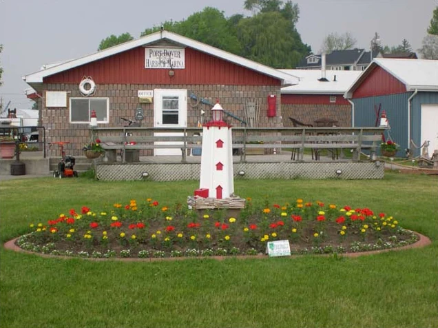

Home/Where a border fits
Where a border fits
The same continuous curb can define a small tree ring or run the full length of a commercial planting bed.

Gardens & lawns
Separate turf from mulch, flower beds, raised beds, fountains and rock gardens.

Pools, patios & decks
Follow an above-ground pool, frame a flagstone patio or finish the transition below a raised deck.

Driveways & new homes
Define a drive, keep stone in a side bed or plan new borders before the lawn fills in.
Commercial & public spaces
Borders can define planting around a sign, separate playground surfacing, edge parking areas or outline flower beds at a marina. Local examples include Delhi Public School and Port Dover Harbour Marina.

Have a border in mind?
We’ll walk the property with you and measure it for a free written quote.